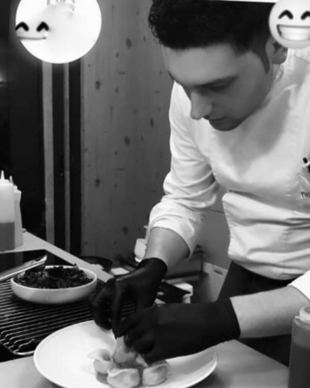

|  |
Antonio ValerioChef e programmatore informatico Sono cresciuto gia da piccolo nell'ambito della cucina ma nel fra tempo la mia passione parallela era l'informatica. Ho frequentato la scuola albergihiera e continuato il mio percorso professionale come cuoco, ma nel fra tempo ho sempre continuato a studiare informatica. Nel 2016 ho aperto il mio ristorant in Germania dopo due anni ho deciso di chiudere l'attività e trasferimi in Italia dove ho lavorato come Chef. |
| 2009-2010 | Dishwasher and commis de cuisine at Restaurant Joe's |
| 2011 | commis de cuisine at restaurant la Paranza |
| Cooking | 🌟🌟🌟🌟🌟 | Web developed | 🌟🌟🌟🌟 |
| informatic | 🌟🌟🌟 | html | 🌟🌟 |